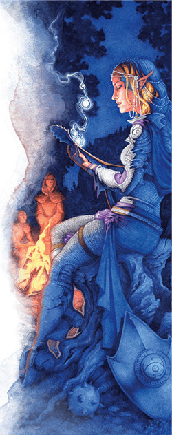
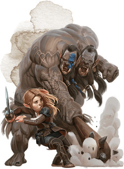
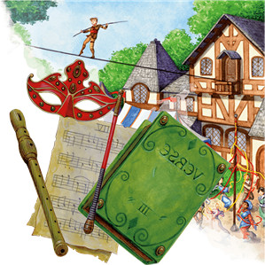

Le barde D&D 5 pour les nuls
Vous êtes un barde, un artiste dont les mots, les chants et les danses sont imprégnés de magie. Vous aspirez peut-être à l'aventure et à la gloire, et voyagez à travers le pays en quête de célébrité et de fortune, ou êtes simplement le vieux conteur de village qui raconte les histoires de ses aventures passées. Le barde est la classe la plus polyvalente de D&D car vous avez accès à l'expertise du roublard, à des techniques de combat et à des sorts qui rendraient jaloux un magicien. Mais cette incroyable polyvalence est au prix d'une complexité supplémentaire, alors regardons ensemble comment tirer le meilleur parti de vos pouvoirs bardiques.
Si le plus important à D&D est de jouer votre personnage d'une manière qui vous amuse et amuse les autres joueurs, il y a tout de même certaines bases que vous devriez connaître pour jouer un barde de manière efficace. Tout comme le MD doit connaître les règles du jeu pour pouvoir les adapter, vous devriez connaître les tactiques de base de votre classe afin de vous amuser à jouer les caprices de votre personnage tout en soutenant votre groupe. Cette aide de jeu va donc vous présenter les bases du barde sur les 5 premiers niveaux.
Créer votre barde
Sans aller jusqu'à parler d'optimisation, la première étape pour bien jouer votre classe est de construire votre personnage efficacement.
- Choisissez votre race. N'importe laquelle peut faire un bon barde, mais préférez celles qui améliorent votre valeur de Charisme. Le Charisme est votre caractéristique la plus importante car c'est elle qui détermine la puissance de vos sorts et de vos autres pouvoirs bardiques, et qui améliore votre compétence de Représentation, laquelle est vitale pour n'importe quel barde. Les demi-elfes font de magnifiques bardes, grâce à leur bonus naturel de +2 en Charisme. Ils correspondent aussi parfaitement à l'image du barde car ne faisant pas partie intégrante des cultures humaines et elfiques, ils font des voyageurs idéaux qui vont de villes en villes et collectent des histoires. Les tieffelins sont aussi d'excellents bardes, eux aussi grâce à leur bonus naturel de +2 en Charisme. De plus, leur apparence diabolique est parfaite pour un rocker hardcore. Les halfelins pied-léger sont également de bons bardes, surtout si vous voulez être un guerrier en plus d'un artiste qui lance des sorts. Leur bonus de +2 en Dextérité en fait des combattants agiles et habiles à manipuler des rapières et des arcs pour soutenir le groupe avec plus que des chants.
- Choisissez la classe de barde (évidemment !).
- Choisissez des compétences qui correspondent à ce que vous voulez que soit votre personnage. La plupart des bardes devraient maîtriser la compétence Représentation, qui est essentiel à la classe. Même si vous n'êtes ni musicien ni danseur, vos jets de Charisme (Représentation) peuvent représenter un talent d'acteur ou même une habileté oratoire.
Quel type de barde ?
Pensez ensuite au rôle que vous voulez remplir dans le groupe, et regardons cela plus en détail. En tant que barde, vous êtes naturellement un touche-à-tout, ce qui vous permet de remplir à peu près n'importe quel rôle au sein de votre groupe. Cette polyvalence est votre plus grande force, mais elle peut aussi vous faire perdre votre focus. Vous pouvez vous battre comme un guerrier, être aussi habile qu'un roublard et lancer des sorts comme un magicien, mais vous n'aurez jamais la puissance brute que possèdent ces classes.
Pensez donc au rôle principal que vous voulez remplir dans votre groupe. Un barde qui se concentre sur l'offensive utilisera à la fois des épées et des sorts pour détruire ses ennemis, tout en donnant à ses alliés les moyens de faire de même. Un barde protecteur utilisera son inspiration bardique pour améliorer les défenses de ses alliés tout en fonçant sur ses ennemis en armure lourde. Enfin, un barde qui veut principalement soutenir ses alliés utilisera les nombreuses options de cette classe pour ce style de jeu, avec des dizaines de sorts et de capacités de classe qui renforcent les capacités de ses alliés.
Jusqu'à ce que vous choisissiez votre collège bardique (aussi appelé sous-classe) au niveau 3, votre rôle sera principalement défini par votre sélection de sorts. Si vous commencez au niveau 1, utilisez ces trois premiers niveaux pour déterminer le rôle que vous voulez remplir dans le groupe. Vous n'avez pas besoin de commencer le jeu en sachant ce que vous voulez faire.
Offensif
Les bardes qui choisissent le collège des Épées (Xanathar’s Guide to Everything) au niveau 3 sont l'exemple suprême du barde offensif. Les caractéristiques de cette sous-classe vous confèrent les compétences d'armure et d'armement nécessaires pour être un guerrier en première ligne et infliger des dégâts facilement. Bien que votre liste de sorts n'inclue pas ceux qui font le plus de dégâts, comme boule de feu, il n'y a tout simplement pas d'autres collèges bardiques plus offensifs.
Protecteur
Le rôle de protecteur peut paraitre étrange pour un barde, mais pas impossible ! Le collège de la Vaillance est le meilleur choix pour les bardes qui cherchent à protéger leur groupe, car ils acquièrent la maîtrise des armures intermédiaires, des boucliers et des armes de guerre, et peuvent utiliser leur inspiration bardique pour aider leurs alliés à éviter les attaques ennemies. Votre objectif principal est en fait d'être une cible la plus évidente possible, car votre travail consiste à prendre les coups à la place de vos alliés.
Soutien
La classe de barde est conçue sur le fait de soutenir vos alliés, mais les véritables maîtres du soutien sont les bardes du collège du Savoir. Votre capacité Mots cinglants vous rend apte à aider vos alliés et vos Secrets magiques additionnels sont un bon moyen de récupérer encore plus de sorts en dehors de la liste des sorts de votre classe, ce qui vous rend encore plus polyvalent.
Créer votre barde - la suite
- Après avoir sélectionné votre sous-classe, placez votre valeur de caractéristique la plus élevée en Charisme. Votre deuxième caractéristique la plus élevée dépend de votre rôle, mais vous pouvez aussi la placer où vous voulez.
- Si vous voulez remplir le rôle offensif et vous concentrer sur les dégâts infligés, placez votre deuxième caractéristique la plus élevée en Dextérité.
- Si vous voulez remplir le rôle protecteur et vous concentrer sur le fait de prendre les dégâts à la place de vos alliés, placez votre deuxième caractéristique la plus élevée en Constitution.
- Si vous souhaitez remplir le rôle de soutien et vous concentrer sur l'utilisation de sorts pour renforcer votre groupe, placez votre deuxième caractéristique a plus élevée en Dextérité. Cela améliorera votre classe d'armure et vous rendra plus difficile à être touché.
- Choisissez un historique qui colle avec le concept de votre personnage. C'est une opportunité pour être créatif ! Comment êtes-vous devenu un barde ? Étiez-vous un soldat qui a fait conserver le moral à son unité avec des chansons ? Ou étiez-vous un marin qui a gardé en mémoire l'histoire de chaque île où il a jeté l'ancre ?
- Enfin, déterminez votre équipement. Votre sélection d'équipement est facile ; la plupart des choix sont des décisions purement créatives de votre part. De quel genre d'instrument de musique voulez-vous jouer ? Est-ce que vous portez l'équipement d'un artiste ou d'un diplomate ? Le seul vrai choix est le type d'arme que vous voulez utiliser, bien que la plupart des bardes portent une rapière. Le choix d'une arme courante vous permettra de choisir une arme à distance comme une hachette ou une arbalète légère, qui vous servira lorsque vous souhaiterez être loin de la mêlée.
Se battre comme un barde
À moins que vous ne soyez membre du collège de la Vaillance, c'est vos sorts vous utiliserez probablement le plus souvent en combat. En tant que lanceur de sorts complet (par opposition au rôdeur ou au paladin qui ne sont des lanceurs de sorts qu'à moitié !), la majeure partie de votre pouvoir se présente sous la forme de sorts. Les bardes ont besoin d'apprendre leurs sorts à partir d'une liste, mais ils peuvent lancer n'importe quel sort qu'ils connaissent à tout moment, tant qu'ils ont un emplacement de sort disponible. Contrairement aux magiciens ou aux clercs, un barde n'a pas à préparer ses sorts. Vous n'en connaissez qu'un certain nombre, mais vous en gagnerez plus au fur et à mesure que vous progressez. Regardez la colonne Sorts connus sur la table du barde pour savoir combien de sorts vous connaissez à un niveau donné.
Les bardes qui comptent sur leurs sorts (les bardes de soutien principalement) passent la plupart de leur temps en retrait de la ligne de front, soutenant leurs alliés de loin car ils ne souhaitent pas être touchés par des attaques ennemies. Cependant, si vous êtes un barde protecteur ou offensif, vous pouvez très bien être au cœur de la mêlée. Simplement, méfiez-vous des sorts qui nécessitent une concentration lorsque vous êtes au coeur d'un combat, car si vous prenez beaucoup de coups il sera difficile de maintenir votre concentration et de réussir tous les jets de sauvegarde de Constitution pour conserver le sort sur lequel vous vous concentrez.
Enfin, notez bien que les listes de sorts suggérées ici sont un point de départ pour les bardes qui ne savent pas quels sorts ou quels dons sont puissants ou utiles. Adaptez ces suggestions à vos préférences personnelles et pour surmonter les défis spécifiques auxquels vous faites face dans votre campagne.
Au niveau 1, vous gagnez Inspiration bardique, votre capacité de base, qui est très axée support, mais votre sous-classe au niveau 3 pourra vous donner d'autres moyens de l'utiliser.
Au niveau 2, vous gagnez la fonctionnalité Touche-à-tout, intéressante pour tous les jets de caractéristique que vous ne maîtrisez pas, et énorme coup de pouce pour l'utilitaire. Vous gagnez également Chant reposant, qui procure un peu de soins supplémentaires à vos alliés pendant un repos court.
Au niveau 3, vous acquerrez Expertise pour deux compétences de votre choix, ce qui double votre bonus de maîtrise lorsque vous faites des jets de caractéristique avec ces compétences. Choisissez les compétences que vous voulez, mais Représentation et Discrétion sont rarement de mauvais choix.
Au niveau 4, vous gagnez une Amélioration de caractéristiques et devriez augmenter votre Charisme ou votre Dextérité de +2. Le choix dépend de si vous voulez rendre plus puissants vos sorts ou vos armes. Les bardes offensifs et les protecteurs peuvent aussi envisager de prendre le don Mage de guerre qui facilite la concentration sur les sorts en combat.
Au niveau 5, votre Inspiration bardique passe de un d6 à un d8, et votre Source d'inspiration vous permet de retrouver toutes les utilisations de l'Inspiration bardique après un repos court. C'est un avantage énorme qui vous permet d'utiliser plus fréquemment les capacités d'Inspirations bardiques que vous donne votre sous-classe.
Offensif
Les sorts de barde ne sont pas impressionnants en termes de dégâts bruts, mais vos sorts utilitaires vous aideront à combler l'écart et à embrocher vos ennemis avec votre fidèle rapière. Soyez prudent cependant, car avant le niveau 3 vous ne maîtrisez pas les armures intermédiaires (collège des Épées seulement), donc vous serez un combattant fragile jusqu'à ce que vous obteniez une meilleure armure.
Au niveau 1, vous apprenez deux sorts mineurs, et l'un d'eux devrait être moquerie cruelle. C'est un classique du barde, et l'un des sorts les plus drôles du jeu si vous n'avez pas peur d'insulter les gens. Vos amis vont l'adorer !
Au niveau 1 encore, vous gagnez quatre sorts de niveau 1. Ces sorts devraient être un mélange d'attaque et de défense pure, pour vous aider à rester en vie si la bataille devient difficile. Ce pourrait être murmures dissonants, secousse sismique, fou rire de Tasha et vague tonnante.
Au niveau 2, vous apprenez un nouveau sort de niveau 1. Ce devrait être un utilitaire pour vous aider dans des situations où vous ne pouvez pas vous battre. Charme-personne et déguisement sont deux choix classiques quand la diplomatie ou le subterfuge sont nécessaires, ou image silencieuse qui pourrait vous aider à faire des tours intéressants.
Au niveau 3, vous devez choisir votre sous-classe. Choisissez le collège des Épées si vous voulez être un bretteur à la Errol Flynn. Les bardes du collège des Epées acquièrent la maîtrise des armures intermédiaires et des cimeterres. Vous gagnez également un Style de combat (Combat à deux armes est probablement le meilleur choix, car vous ne maîtrisez pas les boucliers) et l'impressionnante capacité Figure de lames. Cette capacité polyvalente peut être utilisée pour infliger des dégâts majeurs, vous protéger ou manoeuvrer sur le champ de bataille. Utilisez-la à bon escient, et gardez toujours au moins un dé Inspiration Bardique en réserve au cas où vous auriez besoin de fuir.
Au niveau 3 encore, vous obtenez la capacité de lancer des sorts de niveau 2 et d'apprendre un nouveau sort. Apprenez un sort offensif de niveau 2 comme fracassement ou un sort utilitaire comme invisibilité.
Au niveau 4, vous apprenez un nouveau sort mineur de votre choix et un nouveau sort. Le sort devrait être un sort de niveau 2 défensif comme immobilisation de personne ou un sort affaiblissant comme cécité/surdité. Ces deux sorts vous aident à attaquer un ennemi et à le détruire rapidement.
Au niveau 5, vous apprenez un nouveau sort et accédez aux sorts de niveau 3. Il n'y a pas de bons sorts de barde de niveau 3 offensifs, alors choisissez un autre sort offensif de niveau 1 ou 2 de votre choix, ou un sort affaiblissant de niveau 3 comme motif hypnotique ou nuage nauséabond.
Protecteur
Les bardes protecteurs ont besoin de deux choses principales : un moyen de se maintenir en vie et un moyen de forcer les ennemis à les attaquer à la place de leurs alliés.
Au niveau 1, vous apprenez deux sorts mineurs, et l'un d'eux devrait être moquerie cruelle. C'est un classique du barde, et l'un des sorts les plus drôles du jeu si vous n'avez pas peur d'insulter les gens. Vos amis vont l'adorer ! Il a une utilité supplémentaire pour les protecteurs car il impose un désavantage au prochain jet d'attaque de la cible, ce qui vous permet de maintenir vos alliés en sécurité.
Au niveau 1 encore, vous apprenez quatre sorts de niveau 1. Ces sorts devraient être un mélange de défense et d'utilitaires, pour contrôler le champ de bataille tout en restant en vie. Ces sorts peuvent être fléau, soins (que vous devriez utiliser sur vous-même si vous en avez besoin), secousse sismique et fou rire de Tasha.
Au niveau 2, vous apprenez un nouveau sort de niveau 1. Ce sort devrait être un utilitaire pour vous aider dans des situations où vous ne pouvez pas vous battre. Charme-personne et déguisement sont deux choix classiques quand la diplomatie ou le subterfuge sont nécessaires, ou image silencieuse qui pourrait vous aider à faire des tours intéressants. Si vous avez besoin d'un pouvoir plus offensif, murmures dissonants est un sort puissant.
Au niveau 3, vous devez choisir votre sous-classe. La seule sous-classe qui permet aux bardes de protéger efficacement est le collège de la Vaillance. Lorsque vous rejoignez ce collège, vous obtenez la maîtrise des armures intermédiaires, des boucliers et des armes de guerre. Votre classe d'armure pourrait facilement obtenir +4 ce niveau.
Votre capacité Inspiration martiale permet à vos alliés d'utiliser votre Inspiration bardique pour améliorer leurs dégâts ou éviter les coups. Si vous essayez de protéger vos alliés, encouragez-les à l'utiliser pour éviter d'être touchés, à moins qu'ils n'aient désespérément besoin de quelques points de dégâts supplémentaires.
Au niveau 3 encore, vous obtenez la capacité de lancer des sorts de niveau 2 et apprenez un nouveau sort qui devrait être un sort défensif de niveau 2, comme discours captivant ou vent protecteur, ou un sort utilitaire comme métal brûlant.
Au niveau 4, vous apprenez un nouveau sort mineur de votre choix et un nouveau sort qui devrait être un sort défensif de niveau 2 comme couronne du dément ou immobilisation de personne.
Au niveau 5, vous apprenez un nouveau sort et accédez aux sorts de niveau 3. Ces sorts sont incroyablement puissants, et atteindre le niveau 5 marque une augmentation majeure de votre efficacité en tant que protecteur. Apprenez un sort affaiblissant de niveau 3, comme motif hypnotique.
Soutien
Rôle du barde par excellence, les bardes de soutien utilisent leurs pouvoirs pour soutenir leurs alliés au lieu (ou en plus) de se battre eux-mêmes. Vous resterez presque toujours à l'arrière, en utilisant des sorts mineurs ou des armes à distance pour contribuer au combat.
Au niveau 1, vous apprenez deux sorts mineurs, et l'un d'eux devrait être moquerie cruelle. C'est un classique du barde, et l'un des sorts les plus drôles du jeu si vous n'avez pas peur d'insulter les gens. Vos amis vont l'adorer !
Au niveau 1 encore, vous apprenez quatre sorts de niveau 1. Ces sorts doivent être un mélange d'attaque, d'utilitaire, de soutien et de défense, pour tenir compte de toutes les éventualités, comme murmures dissonants, charme-personne, lueurs féeriques et mot de guérison.
Au niveau 2, vous apprenez un nouveau sort de niveau 1. Ce sort devrait être un utilitaire pour vous aider dans des situations où vous ne pouvez pas vous battre. Charme-personne et déguisement sont deux choix classiques quand la diplomatie ou le subterfuge sont nécessaires, ou image silencieuse qui pourrait vous aider à faire des tours intéressants. Si vous avez besoin d'une guérison plus puissante, héroïsme ou soins sont aussi de bons choix.
Au niveau 3, vous devez choisir votre sous-classe. Le meilleur choix pour un barde touche-à-tout est de rejoindre le collège du Savoir. Ce collège du Savoir vous donne instantanément trois maîtrises de compétences supplémentaires, et la capacité Mots cinglants qui vous permet de dépenser de l'Inspiration bardique afin de rendre plus difficile le fait de vous toucher ou de toucher vos alliés, comme une sorte de soins proactifs.
Au niveau 3 encore, vous obtenez la capacité de lancer des sorts de niveau 2 et d'apprendre un nouveau sort. Apprenez un sort de soutien de niveau 2, comme restauration partielle, ou un sort comme invisibilité.
Au niveau 4, vous apprenez un nouveau sort mineur de votre choix et un nouveau sort qui devrait être un sort utilitaire de niveau 2 comme détection des pensées ou force fantasmagorique.
Au niveau 5, vous apprenez un nouveau sort et accédez aux sorts de niveau 3. Ces sorts sont incroyablement puissants et marquent une avancée majeure dans votre capacité à soutenir votre groupe. Apprenez un sort de soutien de niveau 3 comme dissipation de la magie, ou un sort utilitaire comme langues.
Personnaliser son barde
Les bardes excellent lorsqu'il s'agit de boucher les trous thématiques dans un groupe. Si personne ne veut jouer un clerc, un barde peut soutenir le groupe. Si personne ne veut jouer un guerrier, un barde peut se place en première ligne. Mais dans un groupe où les principaux créneaux sont déjà remplis, les bardes sont exceptionnellement bien placés pour servir de support général et de touche-à-tout. Peu importe votre manière de jouer à D&D, vous pourrez jouer comme vous le souhaitez avec un barde. Votre inspiration bardique vous permettra toujours de vivre par procuration le succès des autres si vous n'avez pas personnellement la réponse à un défi.
Plus important encore, aucun barde ne ressemble à un autre. Pas en termes de construction mécanique, et certainement pas non plus en termes de personnage ou de personnalité. Les bardes ont tendance à avoir mauvaise réputation, mais cette classe a une marge de manœuvre narrative qui permet de tout jouer, du jeune scribe au vieux conteur en passant pas un historien chaste ou une rock star. Si vous jouez un barde, vous ne pouvez jamais vous tromper si vous marchez au rythme de votre propre tambour.
Basé sur un article de James Haeck, traduit par blueace